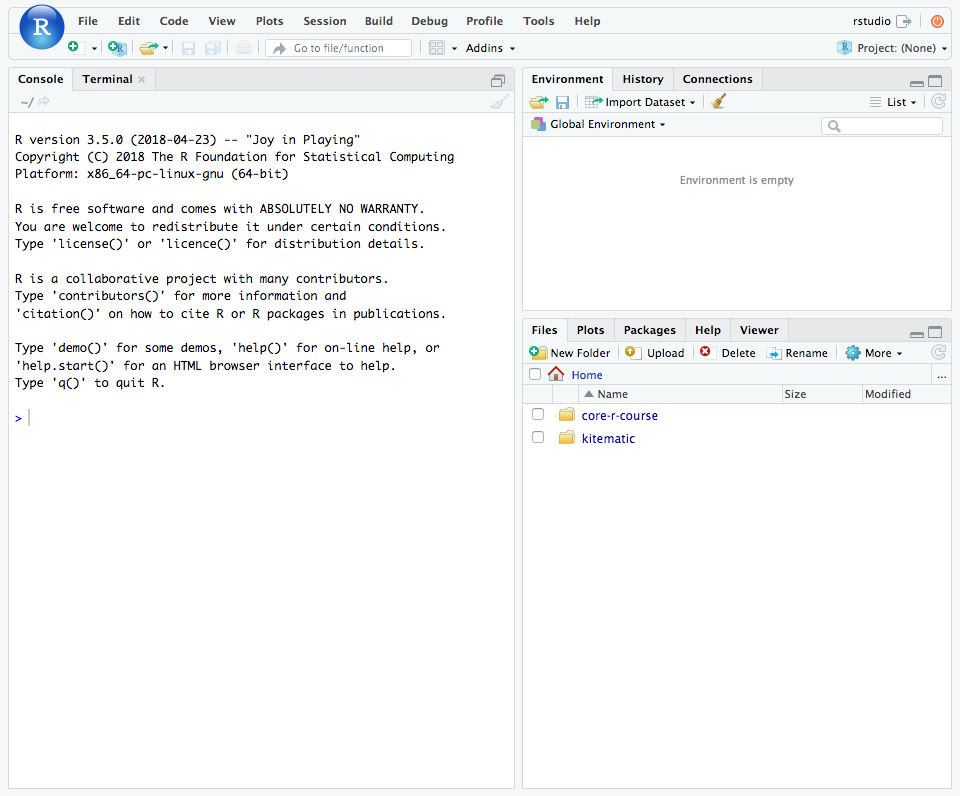
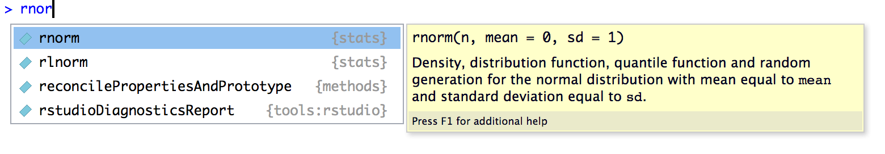
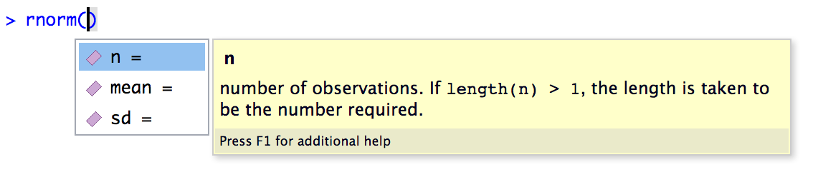
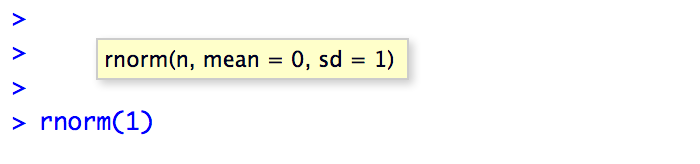
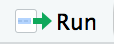
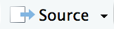
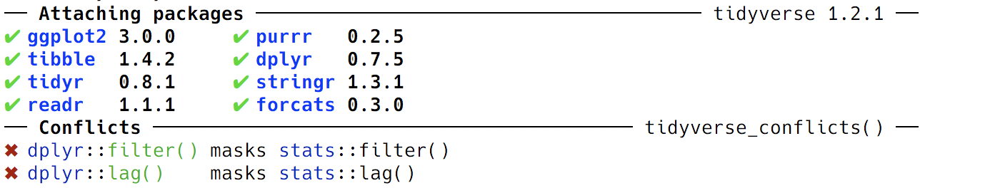
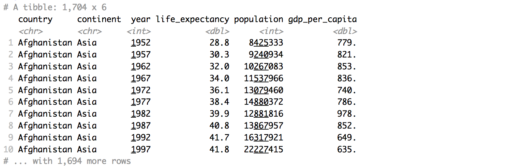
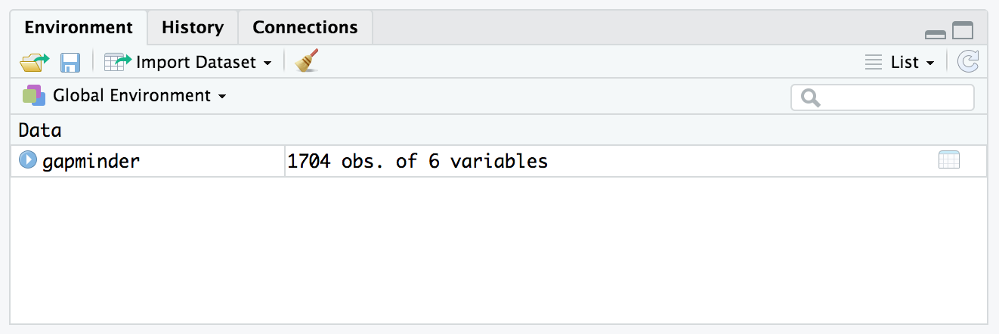
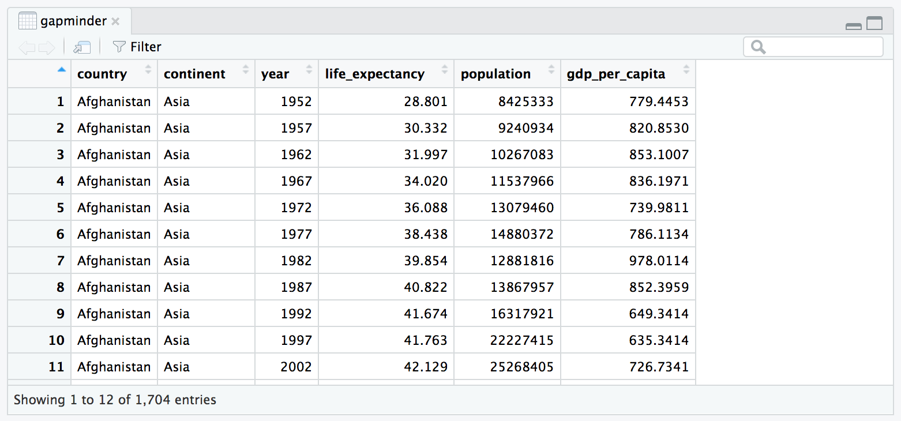

Session 1 — Getting Started
July 18, 2018
Introduction
See slides for the course introduction covering some background on R, why programming can be more effective than point-and-click GUI software, and our expectations for the course.
Sources for this session
The material for this session is drawn from the following sources. We’ll walk through a version of these introductions together. When we’re done it may seem like we don’t know much, but we can already do some basic data processing
Getting to Know RStudio and R
In this session we started working with RStudio and started to learn the syntax of the R programming language.
RStudio
When you open RStudio for the first time, it will look something like this.

Console
On the left side of the RStudio window is the Console pane. This pane contains a direct interface to your R session. In other words, you can enter commands at the R prompt after the > and see the results right there.
Calculator
Try entering the following lines, hitting enter after each line. These commands treat your R prompt like a calculator: you enter the expression you want to compute, hit enter and R gives you a value. (Don’t worry about entering the things after the #.)
[1] 101When you enter 1 + 100 at the prompt and press Enter ↵, R runs the expression, computes the value, and gives you the answer – which is thankfully 101. Throughout these pages, I’ll use the above styling to denote code that you should enter into the command prompt (colored text with grey background) and the output that you should see when you run the code yourself (black monospace text on a white background).
In this next example, suppose you press Enter ↵ too early. What happens?
R knows that the expression isn’t complete, so it starts a new line for you, indicated by replacing the > with a +. Remember this for later: usually you see this when you forget to close a pair of parenthesis () or brackets {}.
[1] 2[1] 13[1] 16[1] 23[1] 23[1] 23[1] 2e-04[1] 5000Advanced Calculator (Functions)
R comes with a wide range of built-in functions that let you compute a wide range of stastically- and scientifically-relevant values. Try the following commands.
[1] 0.841471[1] 0[1] 1.370958These are functions: the function name is the part that comes first – sin – and the function arguments are entered inside the parenthesis.
As you start typing, you may have noticed that RStudio jumps in to help out. Even within the console, RStudio helps make coding more convenient.
The first two functions do what their names suggest: sin calculates the value \(sin(x)\) and log calculates the value \(log_e(x)\).
The third function rnorm() is a little more complicated. If we start typing rnor, we can see the help box that RStudio provides. From here we learn that rnorm() does something related to the normal distribution and that it takes three arguments: n, mean, and sd.

From this menu you can press ↑ and ↓ to browse through available functions. When you stop on a function, R Studio will give you some information about the function, its overall purpose, and the expected arguments that the function accepts.
In this particular example, the help text only gets you part of the way, so I’ll fill in meaning of rnorm() for you. This function is used to generate a random number from the normal distribution.
Note that whenever you run rnorm() you’ll get a randomly selected number, so the numbers you see below won’t match your output on your computer exactly.
From this menu, pick rnorm and press Tab to complete the name, or you can type out rnorm(. Then, within the function, press Tab again to bring up the RStudio helper menu. This time, it shows you information about the arguments to the rnorm() function.

There are three ways to specify the value of a function argument in R:
By position. Enter the values for
n,mean, andsdin the order they appear in the function.[1] 9.435302By name. Use the name of the argument and the
=sign to give values to the function.[1] 10.36313As you can see, explicitly naming function arguments can be more clear to read than using positions, but it can also be somewhat “wordy”.
By default value. If a value for a function is not specified, R will use the default value from the function’s definition.
[1] 10.63286Here the default value for
sdis1, so we didn’t need to specify it. To be reminded of the default values of a function, we can hover over the function with the mouse and RStudio gives another tooltip.
Note that there is no default value for
n, which means that you are required to give a value for this one and you can’t rely on the default value.Error in rnorm(mean = 1): argument "n" is missing, with no default
In practice, you’ll find that typically the first one or two arguments to a function are clearly related to the meaning of the function and usually you don’t need to give those arguments names. Arguments that are later in the function definition can be considered “options” and it’s often useful to explicitly mention the argument name.
[1] 110.1067Comparing Things
In R, we can also compare two numbers or values to see if they’re the same.
[1] TRUE[1] TRUE[1] TRUE[1] TRUE[1] FALSE[1] TRUEThis introduces a new data value type: the logical or boolean value. In R, this is expressed as TRUE or FALSE – always uppercase and (almost) always the full word.
It is possible to abbreviate TRUE as T and FALSE as F, but this isn’t a good idea. Why not? R will never let you store a variable or function with the name TRUE, but it will let you store a variable with the name T. To avoid confusion, just use the full name.
[1] TRUE[1] TRUEEnvironment
So far, everything we’ve entered into the console has given us output, but the results aren’t saved. In order to be useful, we need to be able to store values in variables and objects and use them again in later computations.
R is somewhat unique in it’s use of the arrow <- as the assigment operator. I read it as “is going to be”, so
means x is going to be 1/40.
When assign a value to a variable at the console, R doesn’t show you anything
but if you enter the variable name, R will print out the value it stores.
[1] 0.025Now you can use that variable in functions and other expressions, even creating new variables with values computed using previous values.
[1] -3.688879[1] 3.688879[1] 3.69Notice that the values x, y, and z are now stored in your Environment. The environment is like the working memory of your R session. RStudio tracks everything that’s stored in your environment in the Environment pane in the upper right corner.
RStudio Environment Pane
Variable Names: What makes a name?
There are only three important rules about names:
- Can only contain numbers, letters, underscores, and periods
- Can’t start with number
- Be descriptive!
Okay, so the last rule isn’t a rule as much as a style guide. Variable names are both for the computer and for the humans! The computer doesn’t care what the name is as long as you follow the rules, so you descriptive words that make it clear to you what you meant with your code.
There are a few choices for how to write out the variable name you choose when it contains multiple words.
The preference in the tidyverse (and my personal preference) is to use names_in_snake_case where words are separated by _. In bioinformatics, it is also common to see namesInCamelCase, too. Using dots is common but not recommended for technical reasons.
The final rule of naming things in R is that you can break all the rules if you wrap your name in backticks (`). You’re allowed to use special characters and spaces if you write them like `Dollars Spent ($)`.
You’ll likely see this when importing external data that were formatted in Excel or other software, but it’s not as easy to type these specially-formatted names in your code, so you’ll probably want to avoid them.
History
As you run each command, RStudio keeps track of the commands you’ve run in the History pane.
RStudio History Pane
You can also press ↑ and ↓ at the command prompt to walk through your previous commands.
Scripts
Up to this point, the commands we’ve entered have ben ephemeral. If we’d like to run a command again, or start from the beginning, we would need to search through our command history.
Writing your code inside scripts lets you track the procedures you’re running. During a data analysis you’ll often need to try out different processing ideas to find the correct set of procedures that work. Your goal is to keep a record of how to repeat your data processing from start to finish by storing each step in a script file.
To create a new script, select ▸ ▸ and an empty text file will open up.
R scripts are just plain text files, and they typically end with the .R or .r extension.
To use an R script, you simply enter your commands in the order they should be run in the text area. There are several ways to run code from inside an R script:
Highlight the code you want to run, or put your cursor on the line you want to run, and press Ctrl + Enter ↵ (Windows) or ⌘ + Enter ↵ (Mac).
You can also press the  button at the top of the source file pane.
You can run the entire script using the  button as well.
This is the same as running
source("filename.R")in your console.
Clearing your session
When you run your script, or the code inside your script, the commands build on top of previous code you’ve already run.
When you’re working on a data processing task, you want to make sure that your code works from scratch. Sometimes when you’re working on code though, you’ll try ouy a number of different ways of performing a task. When you copy your code into your R script, it’s easy to forget to include variables that you created or to leave out a step.
Clearing your R session and starting over completely is easy and highly recommended to make sure your scripts work as intended. It’s a two step process:
Clear your workspace by pressing the button in the Environment pane, or select ▸ from the RStudio menu bar.
Restart your R session by choosing ▸ .
At this point, you’ll have an empty workspace and a fresh R session and you can run your script as new.
Data Types
Let’s talk quickly about the ways that R represents and stores data. We’ve already seen a few of the most common data types in R, for example for values like 3.14 and TRUE.
Numbers: Integers and Doubles
There are two basic numeric values: integer and double (or numeric). An integer is simply an integer value like 0, 1, 2, etc. and a double is any number with decimal-place precision, like 3.14159.
When you need to be explicit about the difference, for example to tell the difference between the integer and the decimal value 1, you have to write the integer like 1L. The extra L at the end is how you mark a value as an integer.
[1] 1[1] 1[1] TRUER knows that these are basically the same thing, which is why they print out in the same way and they are assumed to be equal.
But we can use a function called identical() to check that they are not actually the same value.
[1] FALSELogical
Boolean or logical values are stored as TRUE and FALSE, and we’ve seen a number of ways to create logical values by comparing two values.
Character Strings
Character strings store text and in R these are denoted using single ' or double " quotes. As long as you are consistent, they are considered the equivalent.
[1] TRUEThis also lets you include an apostrophe inside a character string, or to include quotes:
[1] "Ryan's apple"[1] "\"Looks like rain today,\" she said"Notice that another way that you can include double quotes inside a character string is to escape the internal quotes. To escape a character, add a \ (backslash) before that character and R will “pause” processing for that character.
In this case, putting \" inside a string wrapped in " tells R to ignore the escaped quote so that it isn’t treated like the end of the string.
Let’s Process Some Data
In this and our next session, we’ll be using an excerpt of the Gapminder data which contains the following columns.
| variable | meaning |
|---|---|
country |
Country |
continent |
Continent |
year |
Year |
life_expectancy |
Life Expectancy at Birth |
population |
Total Population |
gdp_per_capita |
Per-Capita GDP |
Importing the data
Before we get started, make sure you’re using a clean R session.
The first step is to copy the full url to the gapminder.csv file from the materials page. We’re going to use a function called read_csv() from the readr package. This package is included in the tidyverse package and is automatically loaded when you run

Parsed with column specification:
cols(
country = col_character(),
continent = col_character(),
year = col_integer(),
life_expectancy = col_double(),
population = col_integer(),
gdp_per_capita = col_double()
)read_csv() writes out a few messages to the console, letting us know how each column was parsed.
Viewing the data
To view the data, simply call the variable gapminder to print out an overview.

You can also click on the  button in the Environment pane next the the
button in the Environment pane next the the gapminder entry.

This pulls up the RStudio data viewer where you can interactively explore the dataset.

Using dplyr
Just to get a small taste of data processing in R, try running the following commands.
First, let’s count the number of observations for each year in our dataset. To do this, we are going to use dplyr, which provides a wide range of data processing functions (each named as a verb).
dplyr also gives us a new symbol called the “pipe” %>% that we will talk about more in our next session. For now, just read this symbol as and then.
# A tibble: 12 x 2
# Groups: year [12]
year n
<int> <int>
1 1952 142
2 1957 142
3 1962 142
4 1967 142
5 1972 142
6 1977 142
7 1982 142
8 1987 142
9 1992 142
10 1997 142
11 2002 142
12 2007 142As another example, let’s
- Pick out the
continentandcountrycolumns - Choose only the unique combinations of each
- Count the number of countries in each
continentby grouping bycontinentand counting the number of entries in each group.
In R code using the dplyr from the tidyverse, it looks like this:
> gapminder %>%
+ select(continent, country) %>%
+ distinct() %>%
+ group_by(continent) %>%
+ count()# A tibble: 5 x 2
# Groups: continent [5]
continent n
<chr> <int>
1 Africa 52
2 Americas 25
3 Asia 33
4 Europe 30
5 Oceania 2Exporting Data
To export the data, we can simply add another step